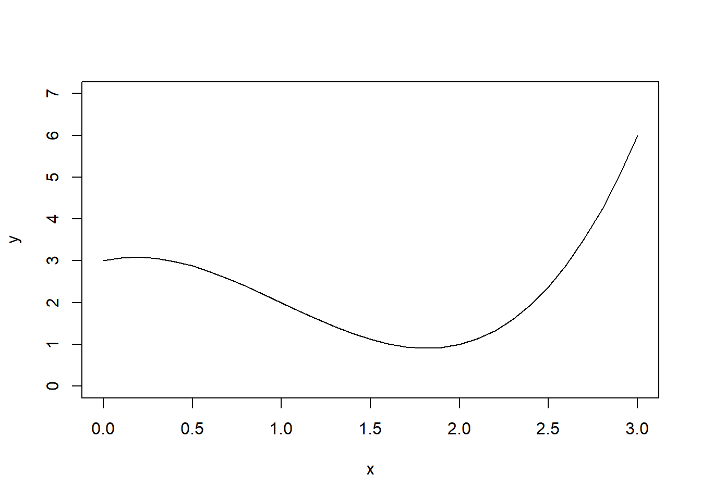
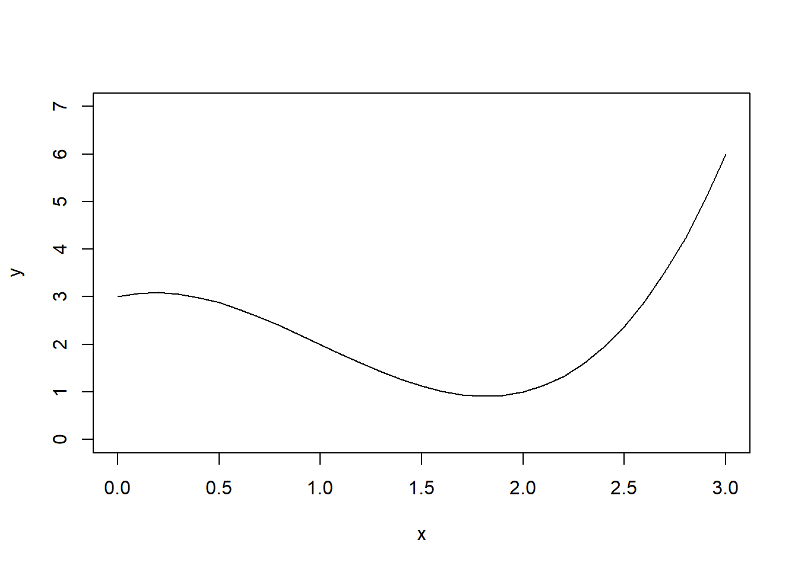
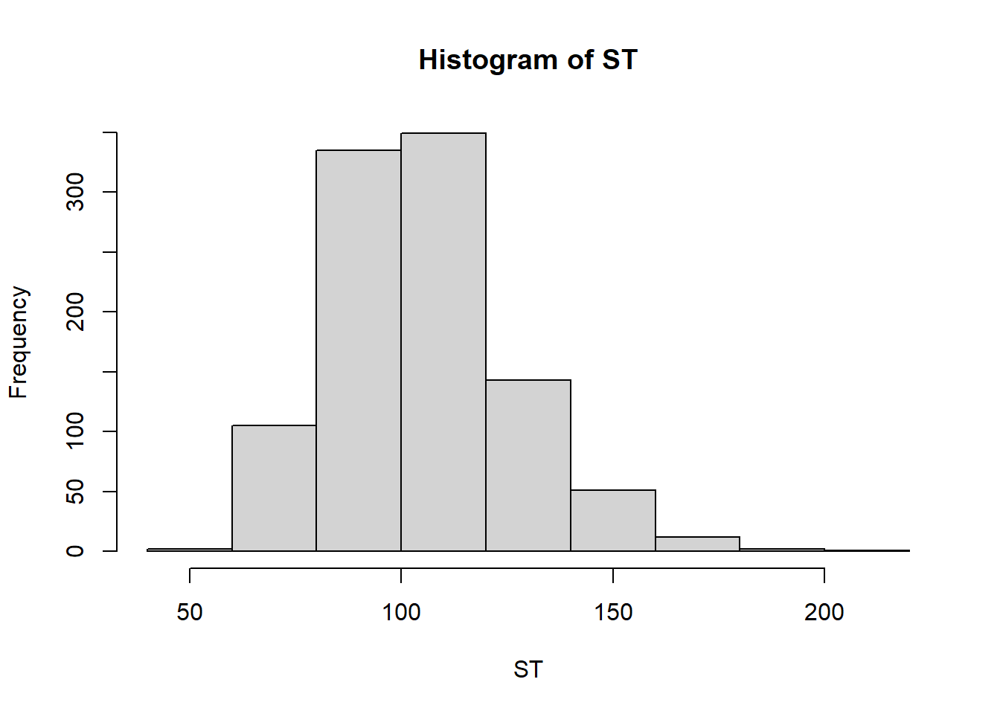
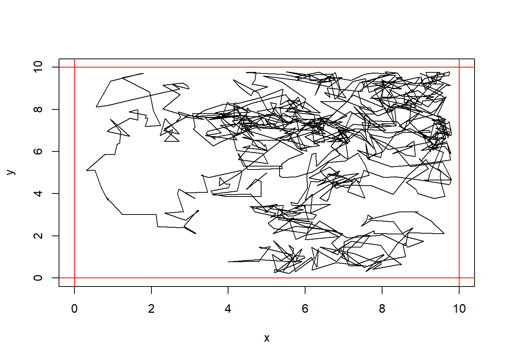
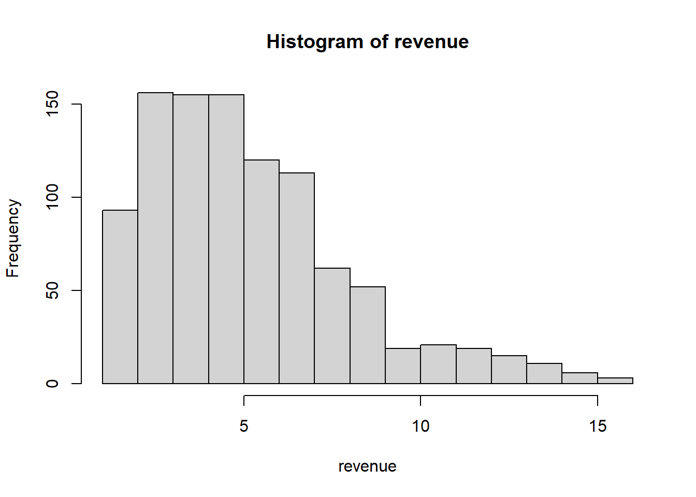

f<-function(x){return(x^3-3*x^2+x+3)}
plot(x=seq(0,3,.1), f(seq(0,3,.1)), type="l", ylim=c(0,7), xlab="x", ylab="y")
Estimate \(\int_0^3 (x^3-3x^2+x+3)\,dx\). To do so, use the fact that \[\int_a^b g(x)dx = \int_a^b \frac{g(x)}{f(x)}f(x)dx\]. Let \(f(x)\) be the density function for a uniform random variable over \([0,3]\).
f<-function(x){return(x^3-3*x^2+x+3)}
plot(x=seq(0,3,.1), f(seq(0,3,.1)), type="l", ylim=c(0,7), xlab="x", ylab="y")
#Solution
#We can define a uniform density function between 0 and 3
#call this g(x)=dunif(x,0,3)
#The integral trick says that int_0^7 f(x)dx = E(f(x)/g(x)).
NMC <- 1000
x <- runif(NMC, 0,3)
mean(f(x)/dunif(x,0,3))[1] 6.581229Suppose \(X_1, X_2,\ldots, X_n \sim Unif(0,1)\). Let \(N\) be the lowest index such that \(X_1+X_2+\cdots+X_N > 1\). \(\mathbb{E}(N)=e\). Use this fact to estimate Euler’s constant \(e\) using Monte Carlo simulation.
NMC <- 1000
Ns <- 0
for(i in 1:NMC){
sum <- 0; N <- 0
while(sum < 1){
sum <- sum + runif(1)
N <- N+1
}
Ns[i] = N
}
mean(Ns)[1] 2.69exp(1)[1] 2.718282I roll 3 six sided dice. What is the probability that the sum of the dice is at least 12? Estimate the answer with Monte Carlo simulation.
NMC <- 100
results <- 0
for(i in 1:NMC){
results[i] <- sum(sample(6, 3, replace=TRUE))>=12
}
mean(results)[1] 0.37Based on your market research, you believe that there are equal chances that the market will be Slow, OK, or Hot.
Another uncertain variable is Unit Cost.B Your firm’s production manager advises you that unit costs may be anywhere from $5.50 to $7.50. Use a Monte Carlo simulation to estimate the expected net profit (revenue - cost).
NMC <- 100
profit <- 0
prices <- c(11, 10, 8)
quantity <- c(50000, 75000, 100000)
for(i in 1:NMC){
market <- sample(1:3, 1)
unitCost <- runif(1, 5.5, 7.5)
profit[i] <- quantity[market]*(prices[market]-unitCost)
}
mean(profit)[1] 216625.5We start with the Black-Scholes-Merton formula (\(1973\)) for the pricing of European call options on an underlying (e.g. stocks and indexes) without dividends:
\(\begin{eqnarray*} C(S_t, K, t, T, r, \sigma) &=& S_t\cdot N(d_1) - e^{-r(T-t)}\cdot K \cdot N(d_2)\newline\newline N(d) &=& \frac{1}{\sqrt{2\pi}}\int_{-\infty}^d e^{-\frac{1}{2}x^2}dx \newline\newline d_1 &=& \frac{\log\frac{S_t}{K} + (T-t)\left(r + \frac{\sigma^2}{2}\right)}{\sigma\sqrt{T-t}}\newline\newline d_2 &=& \frac{\log\frac{S_t}{K} + (T-t)\left(r - \frac{\sigma^2}{2}\right)}{\sigma\sqrt{T-t}}. \end{eqnarray*}\)
In the equations above \(S_t\) is the price of the underlying at time \(t\), \(\sigma\) is the constant volatility (standard deviation of returns) of the underlying, \(K\) is the strike price of the option, \(T\) is the maturity date of the option, \(r\) is the risk-free short rate.
The Black-Scholes-Merton (\(1973\)) stochastic differential equation is given by \(dS_t = rS_t dt + \sigma S_t dZ_t,\) where $Z(t)$ is the random component of the model (a Brownian motion). In this model, the risky underlying follows, under risk neutrality, a geometric Brownian motion with a stochastic differential equation (SDE).
We will look at the discretized version of the BSM model (Euler discretization), given by \(S_t = S_{t-\Delta t} \exp\left(\left(r - \frac{\sigma^2}{2}\right)\Delta t + \sigma\sqrt{\Delta t}z_t \right).\)
The variable \(z\) is a standard normally distributed random variable, \(0 < \Delta t < T\), a (small enough) time interval. It also holds \(0 < t \leq T\) with \(T\) the final time horizon.
In this simulation we use the values \(S_0 = 100\), \(K = 105\), \(T = 1.0\), \(r = 0.05\), \(\sigma = 0.2\). Let’s see what is the expected option price using these parameters and assuming \(t=0\), then we will run a Monte Carlo simulation to find the option price under the same conditions.
S_0 <- 100; K <- 105; endT <- 1.0; r <- 0.05; sigma <- 0.2;
dt <- 0.01
ST <- 0 #vector to hold values
NMC <- 1000
for(i in 1:NMC){
St <- S_0
t <- 0
while(t < endT){
St <- St*exp((r-sigma^2/2)*dt + sigma*sqrt(dt)*rnorm(1))
t <- t+dt
}
ST[i] <- St
}
hist(ST)
mean(ST)[1] 105.1264Estimate the average distance between two points in a sphere of radius 1 using Monte Carlo simulation.
NMC <- 100
dist <- 0
for(i in 1:NMC){
#get a random point
repeat{
coord1 <- runif(2, -1,1)
if(sqrt(sum(coord1^2))<=1){
break
}
}
#get another random point
repeat{
coord2 <- runif(2, -1,1)
if(sqrt(sum(coord2^2))<=1){
break
}
}
dist[i] = sqrt(sum((coord2-coord1)^2))
}
mean(dist)[1] 0.9385939Estimate the average distance between two points in a square with side lengths 1 using Monte Carlo simulation.
NMC <- 100
dist <- 0
for(i in 1:NMC){
coord1 <- runif(2, 0, 1)
coord2 <- runif(2, 0, 1)
dist[i] = sqrt(sum((coord2-coord1)^2))
}
mean(dist)[1] 0.5176531Estimate the average distance between two points on the 3-simplex (points \((x,y,z)\) such that \(0\leq x,y,z \leq 1\) and \(x+y+z=1\).
NMC <- 100
dist <- 0
for(i in 1:NMC){
#A good way to think of the sampling is to pick two random dividing points between 0 and 1. Add 0 and 1 to the list and then sort them, then find the differences
pt1 <- diff(sort(c(0,1,runif(2))))
pt2 <- diff(sort(c(0,1,runif(2))))
dist[i] <- sqrt(sum((pt1-pt2)^2))
}
mean(dist)[1] 0.5199708Let’s assume we have a process constructed from 3 stages (X1, X2, X3). Each one has an average duration (5, 10 and 15 minutes) which vary following the normal distribution and we know their standard deviation (all 1 minute). We want to know what is the probability that the process will exceed 34 minutes?
NMC<-10000
duration <- rnorm(NMC, 5, 1)+rnorm(NMC, 10, 1) + rnorm(NMC, 15, 1)
mean(duration > 34)[1] 0.0124In this example let’s assume we want to assemble three blocks inside a container of a given width. The box has a nominal width of 16.5mm, the three blocks have nominal widths of 4, 6 and 6 mm. By design there is a nominal gap of 0.5mm. However there are variations in the production of the blocks.
Estimate the probability that the 3 blocks will fit in the box.
NMC <- 100
box.w <- runif(NMC, 16.5-.1, 16.5+.1)
block1.w <- runif(NMC, 4-.2, 4+.2)
block2.w <- runif(NMC, 6-.3, 6+.3)
block3.w <- runif(NMC, 6-.25, 6+.25)
fits <- box.w > block1.w+block2.w+block3.w
mean(fits)[1] 0.96A circular vacuum robot that has a radius of 20cm will roll around a room that is 10m x 10m square. It begins in the exact center of the room. The way it moves is:
If there is a speck of dirt located at coordinates (1,1), what is the average amount of time it will take for the robot to collect this dirt?
If the robot travels at 1m/sec, what is the expected length of time for the robot to clean 50% of the floor?
Solution in-progress!
x <- 5; y<- 5
maxN <- 1000
for(step in 1:maxN){
theta <- runif(1, 0, 2*pi)
dist <- runif(1,0,1)
xy_new <- c(x[step],y[step]) + dist*c(cos(theta), sin(theta))
if(xy_new[1]<.2){xy_new[1]=2*.2-xy_new[1]}
if(xy_new[2]<.2){xy_new[2]=2*.2-xy_new[2]}
if(xy_new[1]>9.8){xy_new[1]=2*9.8-xy_new[1]}
if(xy_new[2]>9.8){xy_new[2]=2*9.8-xy_new[2]}
x[step+1] <- xy_new[1]
y[step+1] <- xy_new[2]
}
plot(x,y, type="l", xlim=c(0,10), ylim=c(0,10))
abline(h=c(0,10), col="red")
abline(v=c(0,10), col="red")
Consider the game Chutes and Ladders. On each turn you roll a 6 sided die and move that many spaces. If you land on a ladder you move up to a new spot, and if you land on a slide you move down. Perform a monte Carlo simulation to answer the following questions:

#We need to create a vector of the board
board <- 1:100
#ladders
board[1]<- 38
board[4] <- 14
board[9] <- 31
board[21] <- 42
board[36] <- 44
board[28] <- 84
board[51] <- 67
board[80] <- 100
board[71] <- 91
#chutes
board[16] <- 6
board[49] <- 11
board[48] <- 26
board[62] <- 19
board[87] <- 24
board[56] <- 53
board[64] <- 60
board[93] <- 73
board[95] <- 75
board[98] <- 78
NMC <- 100
set.seed(1)
rolls <- rep(0, NMC)
nChutes <- rep(0, NMC)
nLadders <- rep(0,NMC)
landOn <- matrix(rep(0, NMC*100),nrow=NMC)
for(i in 1:NMC){
position <- 1
repeat{
landOn[i,position] <- landOn[i,position] + 1
if(position==100){break;}
roll <- sample(6,1)
rolls[i] <- rolls[i] + 1
position.new <- min(100,position+roll)
if(board[position.new] < position.new){
nChutes[i] <- nChutes[i] + 1
}
if(board[position.new] > position.new){
nLadders[i] <- nLadders[i] +1
}
position <- board[position.new]
}
}
mean(rolls)[1] 34.66mean(nChutes)[1] 3.93mean(nLadders)[1] 3.08plot(colMeans(landOn))
landOnDF <- data.frame(space=1:100, proportion <- colMeans(landOn))
tail(landOnDF[order(landOnDF[,2]),],10) space proportion....colMeans.landOn.
42 42 0.68
31 31 0.83
24 24 0.84
6 6 0.86
11 11 0.86
26 26 0.86
44 44 0.93
1 1 1.00
100 100 1.00
84 84 1.02It takes an average of 36.78 turns to finish the game The average number of chutes slid down is 4 per game. The average number of ladders climbed is 3.22 per game. Chutes are more likely than ladders apparently; even though there are 10 chutes compared to 9 ladders, the expected number of chutes is much higher than ladders.
The most common spots (besides 1 and 100) are 44 and 26.
44 is the result of landing on one of the ladders. 26 is the result of landing on one of the chutes.
Build a Battleship AI (https://github.com/mitchelljy/battleships_ai)
(Rules of the game: https://www.hasbro.com/common/instruct/battleship.pdf)
Battleship is a game played on 10x10 grid. There are 5 boats of lengths 2, 3, 3, 4, and 5. The Monte Carlo AI is built like this:
This is how the AI decides which square to guess at every state of the game. As an added challenge, you can create additional logic to have the computer make the guess - taking the spot that has the highest likelihood - and determine if it is a hit, or if it sinks a boat. You will need to initialize the board with a random arrangement of the boats.
You will need a function generate_board <- function(width=10, height=10, boats=c(TRUE,TRUE,TRUE,TRUE,TRUE)). This function should randomly place boats on the board, each either vertically or horizontally, and return The layout. Number the boats 1,2,3,4,5. Be sure that numbers do not overlap each other when placed randomly. This function should return a matrix with values 0 if there is nothing placed in a spot, or the boat number. For example, when you place boat 5, it is 5 units long, so there should be 5 spots with the number 5 in them (And they should be in a straight line).
You will also need a function validate_board <- function(board, state) which will check to see if the simulated board is legal given the state. The state should have 0s in locations that have not been tested, -1 in locations where misses have been numbers 1 through 5 where hits have been observed. If the number of \(i\)’s on the board equals the number of pegs in boat \(i\), then the AI will now that boat \(i\) has been sunk - you can convert all of these \(i\)’s into -1 so they will be ignored, and in the future we can dispance with randomly placing boat \(i\). A board is valid if there are no boats in a -1 spot, and any spot in an \(i\) spot contains boat \(i\).
To determine the next move you will need to generate boards until you have had at least 1 valid board (10 is better) to make a choice. If many spots have the same frequency, then you can just pick one at random, or pick the one with the lowest row and column.
Model a city as a 1x1 square; The population is 2.5k, randomly located throughout the city. Pick one single individual to be infected.
On each time step, each individual walks in a random direction and moves .005 units (if it hits a wall, just place it at the edge of the city). After each time step, if an unaffected person is near an infected person (within .002) then the infection spreads to them, and they become infected.
Estimate how many time steps it takes for 99% of the population to become infected.
What if each person will become resistant after \(X_i\) time steps, where \(X_i \sim Geom(p)\). Suppose \(p=.5\). This gives us the standard SIR model - individuals are susceptible, infected or resistant (either cured or dead). resistant individuals cannot become infected, and they cannot infect others. How does the esimate change?
What if we change the population to 1000 individuals?
What if we change the infection distance to be 0.004?
Solution in progress
Suppose a stock price varies from day to day through a scaled process. If the stock price is \(X_i\) on day \(i\), \(X_{i+1} = (1.01+Z/25) X_i\) where \(Z\) is a standard normal random variable. Today the stock price is $50 per share. Use a Monte Carlo simulation to estimate the distribution of stock prices 30 days from now.
NMC <- 1000
plot(NA, xlim=c(1,31), ylim=c(0,100))
finalPrice <- 0
for(i in 1:NMC){
price <- 50
for(day in 1:30){
price[day+1] <- price[day] * (1.01 + rnorm(1, 0, 1)/25)
}
finalPrice[i] <- price[31]
lines(x=1:31, price, col=rgb(0,0,0,.15))
}
mean(finalPrice)[1] 67.90084hist(finalPrice, prob=TRUE)
lines(density(finalPrice))
You can buy a 30 day put option for $10 with a strike price of $65 from Sleazy Jim, the stock broker. This terms of this contract are these:
(In essence, Sleazy Jim is betting that the stock price will be higher than $65 after 30 days.)
Even though interest rates are high now, let’s ignore the affect of interest rate. Using Monte Carlo simulation, estimate the expected value of this put option (the net profit) to determine whether it is a good idea to buy the put option.
gain <- 65 - pmin(finalPrice, 65)
cost <- 10
mean(gain - 10)[1] -5.383399If you enter into this trade with Sleazy Jim, you have an expected loss of $5.53. Don’t make the trade!
You have decided to apply for a patent to protect your IP, but you also did that in order to increase sales as you are aware that businesses deem a patented product more worthy.
Let’s make the following assumptions:
| Sales ($M) | 1 | 2 | 3 | 4 | 5 | 6 | 7 | 8 | 9 |
| probability | 1/33 | 4/33 | 7/33 | 6/33 | 5/33 | 4/33 | 3/33 | 2/33 | 1/33 |
Problem: Suppose a wholesaler offers to buy your entire production and inventory for the year for $6 million (you won’t be able to sell anything else), would you accept the offer?
sales.p <- c(1,4,7,6,5,4,3,2,1)/33
sales.v <- 1:9
revenue <- 0
NMC <- 1000
for(i in 1:NMC){
getPatent <- sample(0:1, size=1, prob=c(.5,.5))
sales.scalar <- 1
if(getPatent){
sales.scalar <- 1 + runif(1, .25, .75)
}
revenue[i] <- sample(sales.v, size=1, prob=sales.p) * sales.scalar
}
hist(revenue)
mean(revenue)[1] 5.401985The expected revenue is 5.75 million. The offer of 6 million is an attractive offer. I would go for that.
Monte Carlo simulation to estimate minimum critical mass of Uranium 235 (https://www.tandfonline.com/doi/epdf/10.13182/NT71-A30982?needAccess=true)
Monte Carlo simulation to estimate the concentration of toxic chemicals in kimchi https://www.sciencedirect.com/science/article/pii/S0889157521002465
Monte Carlo simulation to discover polypeptide folding (https://youtu.be/FNymVr6FWIs)
These problems are excellent practice but they are beyond the material we cover in STAT 340.
12.17 Social Network
Consider a social network with people \(1,2,\ldots, n\). Suppose we have a symmetric social structure, in that if person \(i\) is friends with person \(j\), then person \(j\) is friends with person \(i\). Thus we can define a symmetric friendship matrix with entries \(p_{ij}=p_{ji}\).
Suppose that each pair of people can be friends independently with probability \(\theta\). The question we want to answer here is this: How big must \(\theta\) be in order to be more than 95\% certain that the entire social network will be connected - this means that every two people will be connected either directly or through one or more intermediate friends.
Your goal is to write a function
estimateProportionConnected(n,theta, NMC), which takes three parameters:n, the number of people in the network,theta, the probability of a connection,NMC, the number of Monte Carlo simulations to run.The function should
Create an empty vector to store the results (whether or not each simulation resulted in a connected network)
In a loop,
generate a random symmetric social network of size n (a function
generateNetwork(n, theta)will be useful)Determine whether the network is connected or not
Save the result in your results vector
Hint: You can use the function
concomFromMatAdjin theconcompackage. It takes a symmetric adjacency matrix and returns the connected components. In particular, you want to look at the number of connected components, in thencomponentsvariable.Given a matrix
M, you just callconcomFromMatAdj(M)$ncomponentsIf the number of components is more than 1 then the social network is not connected.
Bonus: For a social network of size \(50\), come up with an estimate of the lowest value of \(\theta\) that produces connected social networks 95% of the time.